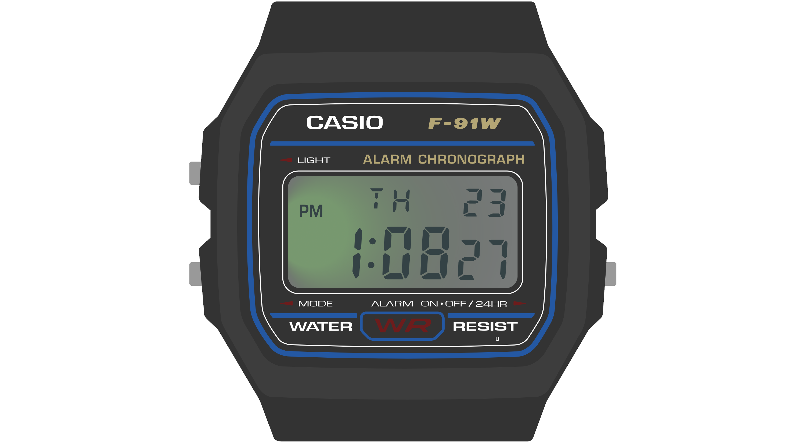
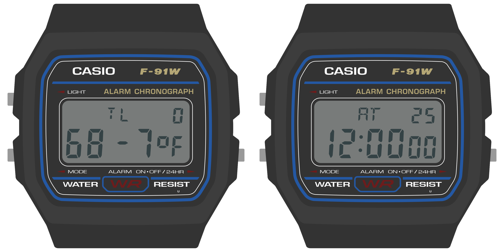

The Sensor Watch
The Sensor Watch is a board replacement for the classic Casio F-91W wristwatch. It is powered by a Microchip SAM L22 microcontroller with built-in segment LCD controller. You can write your own programs for the watch using the provided watch library, program the watch over USB using the built-in UF2 bootloader, and then install the board in your existing watch case to run your own software on your wrist.

Features:
- ARM Cortex M0+ microcontroller
- 32KHz crystal for real-time clock with alarm function
- Ten digit segment LCD, plus five indicator segments
- Three interrupt capable buttons
- Red / green PWM’able LED backlight
- Optional piezo buzzer (requires some light soldering)
- On-board USB Micro B connector
- Reset button with double-tap UF2 bootloader
- Nine-pin flex PCB connector

You may have noticed that there are no sensors on this board. That is by design: rather than pick sensors for you, the goal is to add a tiny flexible PCB with the sensors YOU want, and interface them over the nine-pin connector. The connector provides the following options for power and connectivity:
- 3V power (nominal voltage from a CR2016 coin cell, can drop to ~2.7V)
- An I²C interface with built-in pull-up resistors
- Five general purpose IO pins, which can be configured as:
- Five analog inputs
- Five interrupt-capable digital inputs, with internal pull-up or pull-down resistors
- Five digital outputs
- SPI controller (with one spare analog / GPIO pin leftover)
- One UART TX/RX pair (with three GPIO leftover)
- Up to four PWM pins on two independent TC instances
- Two external wake inputs that can wake from the ultra-low-power BACKUP mode
| Pin | Digital | Interrupt | Analog | I2C | SPI | UART | PWM | Ext. Wake |
|---|---|---|---|---|---|---|---|---|
| A0 | PB04 | EIC/EXTINT[4] | ADC/AIN[12] | — | — | — | — | — |
| SCL | — | — | — | SCL SERCOM1[1] | — | — | — | — |
| SDA | — | — | — | SDA SERCOM1[0] | — | — | — | — |
| A1 | PB01 | EIC/EXTINT[1] | ADC/AIN[9] | — | SCK SERCOM3[3] | RX SERCOM3[3] | TC3[1] | — |
| A2 | PB02 | EIC/EXTINT[2] | ADC/AIN[10] | — | MOSI SERCOM3[0] | TX or RX SERCOM3[0] | TC2[0] | RTC/IN[1] |
| A3 | PB03 | EIC/EXTINT[3] | ADC/AIN[11] | — | CS SERCOM3[1] | RX SERCOM3[1] | TC2[1] | — |
| A4 | PB00 | EIC/EXTINT[0] | ADC/AIN[8] | — | MISO SERCOM3[2] | TX or RX SERCOM3[2] | TC3[0] | RTC/IN[0] |
These tiny “sensor boards” have a set outline, and the available area for your electronics is quite small (5.7 × 5.7 × 1 mm). Still, this is plenty of room for an environmental sensor, MEMS accelerometer or magnetometer and a couple of decoupling capacitors. Note that you will likely be limited to QFN and LGA type parts; SOICs are too large, and even SSOP packages are generally too thick. You can find reference designs for several sensor boards in the PCB/Sensor Boards directory in the Sensor Watch repository.
Watch Interface Guidelines (WIG)
This document outlines best practices for developing watch faces for Movement, the community firmware for the Sensor Watch. While this is a rather specific scope, many of these concepts will be relevant to writing a bare-metal Sensor Watch app as well. After reading this document, you should have a sense for the hardware capabilities and limitations of Sensor Watch, the kinds of applications that are well-suited to the hardware, and the interaction models that tend to make for a rich and usable watch face.
Before we get to details, there are two major points that underly every piece of guidance in this document:
Sensor Watch is a watch
You’ll wear Sensor Watch on your wrist, and you’ll interact with it to answer questions about your day and the world around you. “When does the sun set this evening?” “How late is it in Berlin right now?” “What’s the high tide today?” These are the kinds of questions that Sensor Watch can excel at answering quickly and clearly.

Example: a tide prediction app, showing the time of the high tide and its predicted height.
Even when you add sensors like a thermometer, light sensor or accelerometer, you should think about how your watch face can answer these kinds of simple questions. “How cold was it last night?” “What shutter speed should I use in this lighting?” “Was I active enough today?”
Keeping these prompts simple keeps the focus on the things that Sensor Watch can do well, because:
Sensor Watch is not a smart watch
While Sensor Watch can have sensors added to it to measure things like temperature, light or acceleration, it’s not generally designed to synchronize these measurements to another device like a smart phone; in fact, by default, it has no way of syncing data to or from a device. This makes Sensor Watch less well suited to answering complex questions with that require external data or a longer data trail; questions like “Will it rain tomorrow” require data the watch does not have, and questions like “How active was I last month?“ may be too complex to answer on a small watch with only a few buttons.
There are three key hardware differences between Sensor Watch and a smart watch:
- Whereas a smart watch has a high-resolution screen capable of displaying arbitrary graphics, Sensor Watch has a segment LCD with a fixed layout.
- Whereas a smart watch generally has a touch screen, Sensor Watch has just three buttons for input: the Light, Mode and Alarm (Wake) buttons.
- Whereas a smart watch has powerful processor and a battery that can be recharged daily, Sensor Watch has a much simpler processor, and a battery that must be discarded and replaced.
These differences have implications for how a watch face displays content, how the wearer will interact with a watch face, and how the watch face goes about running its logic:
- You will need to think carefully about how to format the information you want to display and make it work within the constraints of the segment LCD layout.
- You will need to make the most of the limited button inputs, especially since all of these buttons have default functions like changing the mode or illuminating the LED.
- You must take care to ensure that your watch face does not consume too much battery power. In addition, your watch face must be able to work gracefully with Movement’s low energy mode.
Road Map
This document is divided into five sections. First, we’ll talk about the “big picture” stuff: some of the concepts you should keep in mind when designing watch faces for Sensor Watch, some of what it does well, and some of what it doesn’t. Next, we’ll have three sections dedicated to each of those three key areas of functionality: the display, the buttons, and the low-power microcontroller. Finally, we’ll bring all of these concepts together to make a very simple watch face that says hello.
Big Picture Stuff
The Casio F-91W, the donor watch on which Sensor Watch is based, is one of Casio’s smallest and simplest wristwatch designs. It is designed to show very basic information: the date and time. As we walk through the device’s hardware capabilities, we can see how it is tailored carefully to that use case:
- It has a small segment liquid crystal display with ten digits.
- It has a dim backlight on the left side of the display that mostly illuminates the hours and minutes.
- It has a buzzer for firing a single alarm, as well as an hourly alert.
- The three buttons on the watch offer very basic inputs:
- the “Light” button illuminates the watch face,
- the “Mode” button cycles through the four modes that the watch offers,
- and the “Alarm” button is the only truly multi-function button: it turns the alarms on or off when the alarm face is active, and swaps the main 12/24 hour mode when the main clock is active.

Sensor Watch inherits many of the same hardware limitations of the F-91W: the screen is small, the layout is designed to display no more than ten characters at a time, and we have only those three buttons to work with (one of which is dedicated to switching modes). This leads to some broad guidelines that will be useful to think about when designing your watch face:
- Your watch face’s main interface should focus on presenting a single screen of useful information.
- If possible, your most important information should appear on the left side of the screen, since the LED will illuminate the left side more brightly than the right.
- You should feel free to use every character position and every indicator segment to its maximum potential! You have ten characters to work with; use them to the fullest.
- If you have more than one screen of information to display, you should hide it behind a press of either the “Alarm” or “Light” buttons...
- ...because your watch face should be prepared to resign immediately when the wearer presses the “Mode” button. (More on this in the “buttons” section!)
Let’s look at some of the watch faces that come with Sensor Watch to see how these guidelines are implemented in practice.
The Temperature Watch Face

This is the Temperature watch face. It displays the current temperature, as read from a thermistor voltage divider on a Sensor Watch accessory board.
This watch face is relatively simple. It's dominated by a single large piece of information: the current temperature. The wearer is able to absorb this information quickly and easily. The temperature data itself is left-justified. If the LED only illuminated the first two digits, the wearer would at least know that the temperature is in the range of 68 degrees. The fractional part, while useful, is not essential to a quick read of the conditions.
Also note that the “signal” indicator segment, used on the main watch face to indicate the status of the hourly beep, is here repurposed to indicate when a new reading is being taken. Don’t be afraid to use these indicators for your own purposes! Whereas the bell indicator might signal that an alarm is enabled on an alarm watch face, you may want to use it to signal an error or warning condition on another face. This is totally fine: the wearer will over time grow familiar with the layout of your watch face, and make the correct associations between icons and concepts.
The temperature display face is relatively simple; let’s take a look at a more complex watch face.
The Temperature Log Watch Face

This watch face stores a 36-hour log of temperature values, which the wearer can read back to get a sense of high and low temperatures over time. This seems at first glance like it might be a formidable challenge for a watch face with only ten digits, but by thinking carefully about the design, we can fit a lot of information on this small screen.
Let’s revisit the first guideline. This screen displays a useful, information-dense readout of the most recent temperature logged: the “TL” indicates the mode (Temperature Log), and the “0” at the top right indicates that this is the zeroth (i.e. most recent) reading taken. The whole bottom line is dedicated to a large, clear display of the logged temperature.
For clarity, it would be nice for this screen to display not just the index of the temperature reading, but also the time that the temperature reading was taken. There isn’t room for that on the display, but by pressing the “Light” button, the wearer can temporarily move the watch face into a mode that displays the timestamp of the reading:

This mode simply displays the timestamp for a second or so — this reading was taken at 12:00 AM on the 25th day of the month — and then returns the wearer to the temperature reading at that timestamp. This is a simple way to stack two aspects of the data point into one screen. If you had multiple aspects (say, temperature, humidity and timestamp) you might consider using the light button to cycle through those three aspects of the data point.
This handles the most recent temperature and timestamp. But what about our 36 hour log? The answer there lies in the other button, the “Alarm” button. Pressing the “Alarm” button moves one index back in the list of readings:

Once again, we’ve managed to fit more information onto the screen by hiding it behind a button press. The index at the top right makes clear that this is data point 1 (not data point 0), and again, pressing the “Light” button on this screen will display the timestamp for this reading: 11:00 PM on the 24th. Repeated presses of the “Alarm” button move the wearer back in time. At any time, the wearer can press the “Light” button to view the timestamp. And of course, the wearer can press “Mode” at any time to move from the temperature log face to the next face in the list.
Note that while the wearer is likely to develop familiarity with your watch face’s unique visual layout over time, they will likely expect the buttons to behave consistently between watch faces. They will always expect the “Mode” button, for example, to advance the watch face, and for the “Alarm” button to toggle settings or change values. Generally speaking, you should use the “Alarm” button to move through time or advance a value, and use the “Light” button to move between sub-modes within the watch face (and illuminate the LED, as appropriate). The “Time Set” watch face, for example, uses the “Light” button to move between setting the hour, minute and second, and uses the Alarm button to change the value in each field.
Wrapping Up
When designing watch face visuals for the Sensor Watch, you should aim to present one screen of content with clarity:
- Don’t shy from information density; use as many digits and indicators as you need.
- Try to fit more crucial information on the left side of the screen, and put less pressing information on the right.
- Don’t worry about how segments or digits are used on other watch faces; when your watch face is on screen, you are in control.
When designing interactions for the Sensor Watch, you should aim for consistency with other watch faces:
- Your watch face should resign immediately when the “Mode” button is pressed and pass control to the next watch face in the list.
- If your watch face has multiple modes, you should use the “Light” button to toggle or advance through them.
- If your watch face presents multiple data points or advances through multiple values, you should use the “Alarm” button to advance through those.